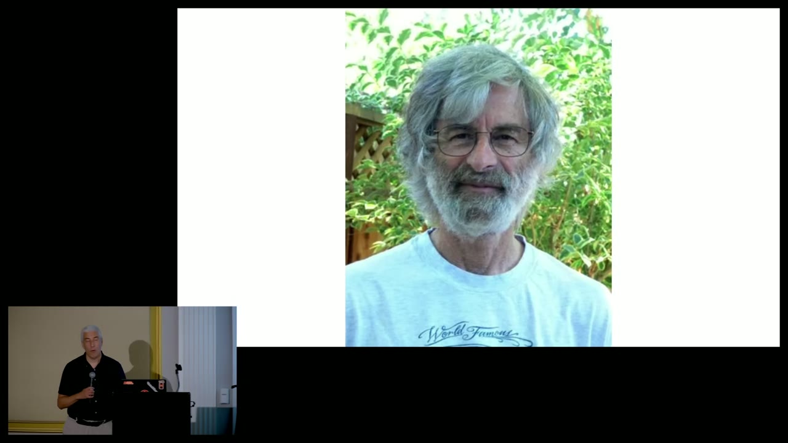
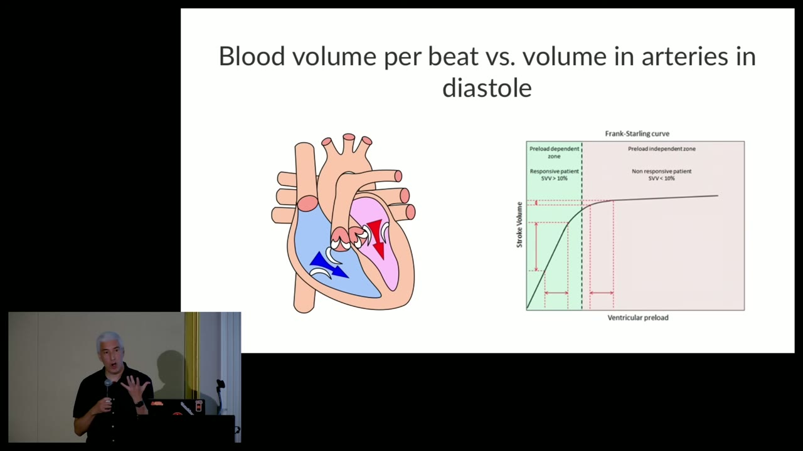
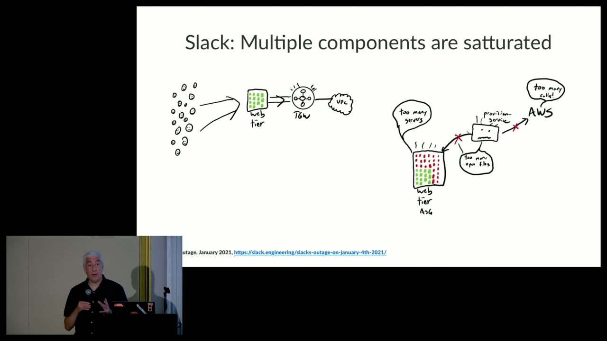
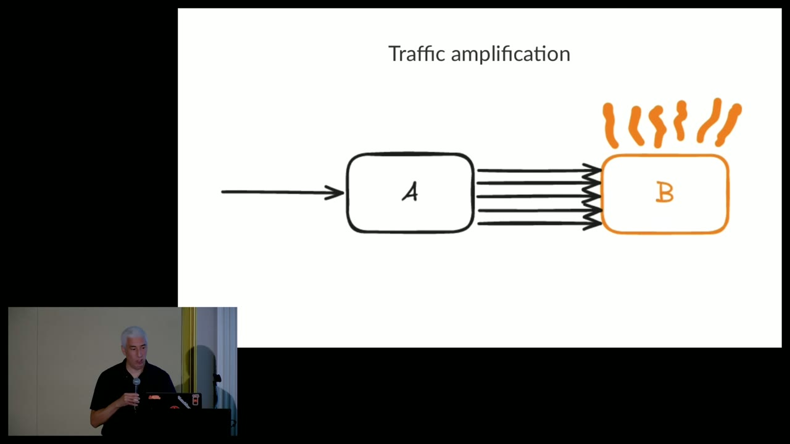

1. Logic, biology, and the systems we actually operate
00:19 Hochstein opens with Leslie Lamport and a 2003 lecture, The Future of Computing: Logic or Biology. Lamport’s “logic” path is mathematical description: specify a system’s initial state and the rules by which state can change, then reason about its behavior. Hochstein connects this to TLA+: an Init predicate constrains the starting state and actions describe possible next states.
The biological path accepts a different condition. Biological systems are extraordinarily complex; we can understand aspects of them without possessing a complete mathematical description. Lamport’s warning was caustic: if computer systems become incomprehensible, people will coax them through ritual instead of understanding them.
“We should not accept this.”

Hochstein’s diagnosis is that Lamport’s feared future arrived: production software systems are treated more like biological organisms than fully comprehensible machines. But he immediately sharpens what “software failure” means. Source code is inert. The thing that breaks is a running system: software on hardware, surrounded by deploy and test tools, and operated by people.
That whole arrangement is a complex adaptive sociotechnical system. Its people and automation react to changing conditions; those reactions alter the conditions for every other part. If this sounds biological, Hochstein argues, then biology and resilience engineering may offer useful models—not homeopathy, but concepts for understanding adaptation at a boundary.
2. Saturation is the boundary, not merely “100%”
05:59 The first model comes from the heart. On a Frank–Starling curve, increasing ventricular preload initially yields greater stroke volume. Eventually the curve flattens: more input no longer produces proportional output. The heart has reached a limit.

“Everything we deal with, all the systems we work with, they have a limit.”
Hochstein borrows a more general saturation model from resilience researcher David Woods. Imagine the entire system as a point moving inside a region: the competence envelope. Traffic, network faults, bugs, deployments, tooling and human action push that point around. Within the envelope, the system absorbs stress: spare capacity takes the spike, retries hide a transient failure, a canary catches the bug, or an operator rolls back quickly. Outside it, the system has reached the boundary of what it can presently handle.

This definition is deliberately broader than a performance counter. Saturation is not only a CPU at 100%. It is a system exhausting its remaining capacity to maneuver. The relevant “system” includes responders, permissions, CI pipelines and external providers. A human decision queue can saturate just as surely as a thread pool.
3. A tour of finite things
The talk inventories limits from the obvious to the obscure. The point is not to make a definitive checklist. It is to train the eye to see waiting work, fixed populations and hidden fail-safes wherever they occur.
CPU
When runnable tasks outnumber cores, work waits. Latency rises, deadlines are missed and callers time out. “Utilization” is only the surface; the queue of runnable work is the saturation signal.
Memory and GC
Virtual allocation can succeed before physical capacity exists. Later, OOM handling may kill a process. Under pressure, garbage collection may effectively convert memory saturation into CPU pauses and blocked application threads.
Storage and inodes
Disk bytes are finite, but so is file metadata. A service can have space remaining and still fail after exhausting inodes. Harmless errors can become harmful when full stack traces fill a device.
Network bandwidth
A NIC or a link can carry only so much. Once bandwidth is consumed, additional data cannot move at the demanded rate.
Pools and queues
Threads and database connections are pooled partly for speed and partly to limit damage. A bounded queue is a fail-safe, but a full queue must block or reject new work.
Dependency limits
A provider’s HTTP 429 is a boundary imposed by another system. Your service may have capacity locally and still be saturated at its dependency relationship.
15:40 Virtual limits deserve special attention. They are often deliberate circuit breakers placed below a physical breaking point. Failing earlier can produce a lower-consequence failure. Yet the limit is still real to the caller that hits it. Safety is not the absence of failure; it is choosing where and how failure occurs.
4. Three portraits of coupled saturation
The most memorable examples are not components simply reaching a number. They are loops in which protective behavior, misleading signals and coupled resources reshape the incident.
Bluesky: a small request rate with enormous fan-out
18:20 A request containing roughly 15,000–20,000 URIs spawned a huge number of goroutines and outbound local connections. Client-side ephemeral ports became the finite resource. The familiar “bind: address already in use” message looked like a server listening conflict, but the exhausted population was the client port range—even though the destination was localhost. The later error path added logging, thread and memory pressure, illustrating how one boundary can push another.

Slack: autoscaling meets four different limits
20:00 A post-holiday traffic surge overloaded a transit gateway. Web-tier calls blocked on the slow network. A thread-count rule correctly triggered rapid scale-out, but that surge overloaded the provisioning service, which hit open-file and cloud quota limits. The autoscaling group itself eventually reached its configured maximum. The attempted adaptation consumed capacity elsewhere.

Waymo: a safety check becomes a city-scale queue
21:55 During a San Francisco power outage, dark traffic signals produced an unusual correlated demand. Vehicles could treat them as four-way stops but sometimes requested a “confirmation check.” The sudden population of dark intersections overwhelmed that confirmation path, creating a backlog and leaving vehicles stopped. A safeguard appropriate for sparse exceptions did not have capacity for a city-wide exception.

5. Systems reach the edge by more than “too much traffic”
Load growth is the familiar path. Bad traffic such as scrapers and runaway automation can overwhelm a service, but so can desired success. Hochstein shows near-contemporaneous comments from engineers at fast-growing AI companies: demand is welcome and still capable of exhausting the system.
Correlated spikes produce a thundering herd. Retries are a special feedback form: when an overloaded service returns failures, automatic or human retries add traffic precisely when capacity is scarce. A local reliability mechanism can become global load.

Amplification hides behind normal-looking ingress. One call into service A may fan out into many calls to service B. The edge rate appears modest while an internal dependency is flooded.
Leaks separate the time of change from the time of impact. A resource leak introduced months earlier may remain invisible because frequent deployments restart the process. A safety-motivated deploy freeze can finally allow the pool to empty, exposing the latent defect when nothing recently changed.
Work becomes more expensive. A feature may be functionally correct while consuming far more CPU or memory than expected. Hochstein points to Cloudflare’s 2019 WAF regex, whose extreme backtracking saturated CPUs. Batch jobs, ad hoc database queries and GUI tools can similarly compete with the online path.
Configuration guesses wrong. A rate limit, maximum group size or other virtual bound may be fine under nominal load and too low at the peak. The configuration has not “broken”; its assumption has met a new environment.
6. You cannot design away finitude
“You can’t actually avoid saturation.”
Hochstein gives three reasons. Resources are finite, so infinite headroom is impossible. Organizations face production pressure, so engineering time is always allocated among competing forms of value. And some boundaries remain unknown until a system touches them. The result is not fatalism: design work matters enormously, but every expanded envelope still has an edge.
Incidents often enlarge the competence envelope. After encountering a failure mode, a team changes the design so the system can absorb that case next time. This is useful base adaptive capacity. Woods’s additional concept is graceful extensibility: the ability to change the system when surprise challenges the boundary, bringing operation back into a viable region.
“To be resilient, we need to prepare to be surprised.”
People remain central because truly unanticipated cases are precisely the cases not already encoded into automatic recovery. An on-call responder recognizes an unfamiliar combination, forms and revises hypotheses, and changes the system. The talk’s definition of resilience is active: not “nothing bad happened,” but the system found a way to alter its relationship to the demand.
7. Build optionality before you need it
During an incident, something must change: demand, capacity, code, configuration, topology or user-visible quality. The team rarely knows in advance which change will be needed, so it needs optionality—knobs that already exist and people capable of operating them.
“The two worst times to write code are A, during an interview, and B, during an incident.”
Hochstein’s examples form a practical menu:
- break-glass paths for urgent production changes;
- known procedures to cycle containers or restart a service;
- rapid manual scale-up when autoscaling has reached a limit;
- fast rollback—and, when rollback is impossible, a fast fix-forward path;
- dynamic configuration and feature flags for changing limits without a deploy;
- rules that can quickly block abusive traffic, a pathological query or a misbehaving rule.
Every knob creates risk as well as possibility. A bypass around normal gates can accelerate recovery or accelerate damage. That tension cannot be eliminated by declaring one side safe. The incident already changed the risk balance; sometimes not making a dangerous change is more dangerous than making it.
Operational expertise is part of capacity
Tools are useful only if responders know they exist and can interpret their consequences. General industry expertise can be hired; detailed knowledge of one company’s history, dependencies and “particular weirdnesses” must be grown inside the organization.
Hochstein names two learning channels. Experiential learning comes from responding to real incidents. Provocatively, he says that an organization with no incidents for a long time has a risk: the response muscle weakens.
“There’s an optimal number of incidents and it’s not zero.”
Vicarious learning comes from seeing how skilled colleagues worked. A valuable post-incident review therefore reconstructs cognition and adaptation: which signals responders noticed, what they remembered, which dashboards they consulted, how they knew an unusual action was possible, and which plausible red herrings delayed them. The story of response builds future response capacity.
8. The Q&A adds guardrails and correctives
Emergency access needs a path, an approver and a purpose
41:30 Asked how to allow ad hoc production intervention without enabling reckless damage, Hochstein describes a straightforward break-glass request tied to an incident and approved by another human. Forbidding direct access entirely can push responders into improvised workarounds; unconstrained access creates a different danger. The design task is to make the risk trade explicit and usable.
Logic and biology are tools, not mutually exclusive destinies
44:10 The talk’s opening dichotomy is challenged. Hochstein answers that it is ultimately not correct as a strict choice. Formal methods can improve the design of parts of a distributed system and force important questions. Resilience models force different questions about surprise and response. Better design expands the envelope; realism acknowledges that it will never become infinite.
Premortems and tabletops create practice—but practice has a maintenance cost
46:30 A premortem imagines that a project has already failed completely and asks each participant to explain why. The wording matters: it bypasses the softer “what could go wrong?” and treats failure as a fact to be explained.
Tabletop exercises can build similar response muscles. Hochstein believes in them and still identifies their failure mode: inventing and facilitating fresh scenarios takes enough effort that teams often start, run a few, and stop. That observation is itself a saturation story—the organization’s capacity to maintain the learning mechanism is finite.
Do not let corrective actions consume all the oxygen
49:10 High-severity incidents normally produce write-ups, reviews and corrective actions. Hochstein’s complaint is not that teams refuse changes, but that they reach for them too early. A corrective action from one incident can contribute to another. First understand how the incident happened and how people responded; then judge the intervention in the context of the whole system.